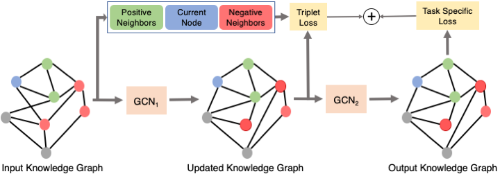

Learning Graphs for Knowledge Transfer with Limited LabelsCVPR 2021Pallabi Ghosh Nirat Saini Larry Davis Abhinav ShrivastavaUniversity Of Maryland - College Park |
||
| Arxiv Github | ||
AbstractFixed input graphs are a mainstay in approaches that utilize Graph Convolution Networks (GCNs) for knowledge transfer. The standard paradigm is to utilize relationships in the input graph to transfer information using GCNs from training to testing nodes in the graph; for example, the semi-supervised, zero-shot, and few-shot learning setups. We propose a generalized framework for learning and improving the input graph as part of the standard GCN-based learning setup. Moreover, we use additional constraints between similar and dissimilar neighbors for each node in the graph by applying triplet loss on the intermediate layer output. We present results of semi-supervised learning on Citeseer, Cora, and Pubmed benchmarking datasets, and zero/few-shot action recognition on UCF101 and HMDB51 datasets, significantly outperforming current approaches. We also present qualitative results visualizing the graph connections that our approach learns to update.  |
||
Bibtex@inproceedings{taha2021knowledge,
title={Learning Graphs for Knowledge Transfer with Limited Labels},
author={Ghosh, Pallabi and Saini, Nirat and Davis, Larry and Shrivastava, Abhinav},
booktitle={Proceedings of the IEEE/CVF Conference on Computer Vision and Pattern Recognition (CVPR)},
year={2021}
}
|
||
AcknowledgementsThis work was partially funded by independent grants from Facebook AI and DARPA SAIL-ON program (W911NF2020009) |